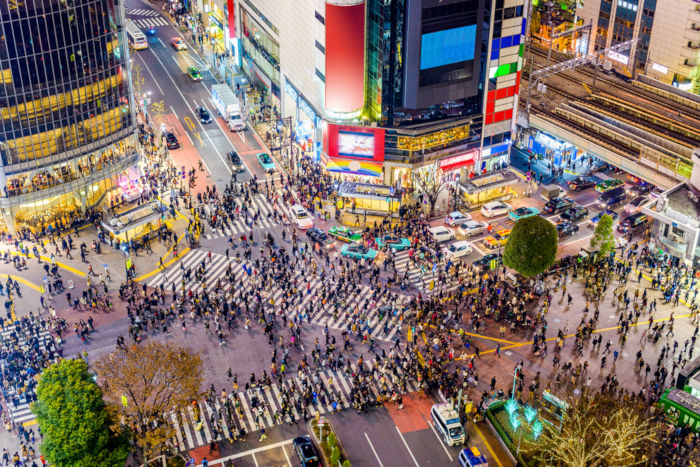

Tóquio é a capital do Japão e sede do governo nacional. É considerada uma das maiores metrópoles do planeta e também o centro político, econômico, educacional e cultural do Japão. A metrópole representa uma das áreas de maior aglomeração urbana do mundo. A metrópole é constituída por 23 bairros, 26 municípios adicionais e as ilhas Izu e Ogasawara.
O Japão é um arquipélago de 6.852 ilhas, sendo estas quatro as maiores: Honshu, Hokkaido, Kyushu e Shikoku. As principais províncias do país concentram-se na costa de Honsu, maior ilha do arquipélago, inclusive Tóquio.
As províncias fronteiriças são:
O relevo é, em geral, bastante acidentado com muitas áreas montanhosas e com a presença de vulcões. O clima da capital japonesa é temperado e apresenta umidade do ar elevada. Os períodos de chuva e de nuvens carregadas sobressaem-se e há poucos dias de céu claro. O inverno é rigoroso, com temperaturas baixas e as máximas não ultrapassam 35ºC, sendo a temperatura média anual de 14ºC. Há ocorrências de tufões periódicos em Tóquio.
A capital japonesa possui um pouco mais de 9 milhões de habitantes. Já a região metropolitana de Tóquio, que compreende todas as grandes cidades no entorno, possui um aglomerado de aproximadamente 37 milhões de habitantes, o maior aglomerado urbano do mundo.
Segundo previsões feitas pela Organização das Nações Unidas, Tóquio seguirá no topo da lista, sendo a cidade mais populosa, até 2028. As previsões apontam que a cidade de Nova Deli, na Índia, irá ultrapassar a capital japonesa.
Tóquio foi fundada em 1457 e chamava-se Edo. A metrópole tornou-se capital do Japão com o atual nome em 1868. A expansão da cidade aconteceu ao longo dos anos, tornando-se bastante populosa. Grandes desastres naturais assolaram a região, destruindo parte de Edo, provocando incêndios e tirando a vida de milhares de pessoas.
Isso se deve à sua localização, por estar em uma região de vulcões e na fronteira das placas tectônicas Euro-asiáticas e do Pacífico, portanto está suscetível a abalos sísmicos e outros fenômenos geológicos.
A existência de arranha-céus, que é uma marca da cidade, só é possível devido aos avanços tecnológicos na construção desses edifícios, pois além dos fenômenos naturais, as guerras também destruíram a cidade, especialmente no período da Segunda Guerra Mundial.
Foi reconstruída no pós-guerra, voltando a crescer e se desenvolver com a criação de linhas de metrô e trem, instalação de diversas indústrias, melhoramento do sistema de saneamento básico e de infraestrutura, tornando-se uma das cidades de maior dinamicidade do mundo. O Japão foi a primeira nação a sair do status de país menos desenvolvido para país desenvolvido.
Tóquio apresenta o maior produto interno bruto do mundo, sendo, portanto, o centro financeiro do Japão, assim como do continente asiático, com a presença de inúmeras empresas, bancos, entre outros. O PIB da metrópole é avaliado em um pouco mais de US$ 1,4 trilhão. Tóquio foi eleita uma das cidades com maior custo de vida do planeta.
Muitas empresas possuem suas sedes na metrópole, visto que a bolsa de valores da capital japonesa é uma das mais representativas do mundo. Em Tóquio, bem como no país como um todo, há uma forte presença de companhias eletrônicas, além de petroquímicas, fábrica de automóveis e empresas de imprensa.
Tóquio apresenta o maior produto interno bruto do mundo, sendo, portanto, o centro financeiro do Japão, assim como do continente asiático, com a presença de inúmeras empresas, bancos, entre outros. O PIB da metrópole é avaliado em um pouco mais de US$ 1,4 trilhão. Tóquio foi eleita uma das cidades com maior custo de vida do planeta.
Muitas empresas possuem suas sedes na metrópole, visto que a bolsa de valores da capital japonesa é uma das mais representativas do mundo. Em Tóquio, bem como no país como um todo, há uma forte presença de companhias eletrônicas, além de petroquímicas, fábrica de automóveis e empresas de imprensa.
Tóquio é visitada por milhares de turistas o ano todo. Possui vários pontos turísticos como templos budistas, santuários famosos como Meiji e Sensoji, parques e jardins, como Ueno e Yoyogi. A prefeitura é um dos pontos mais visitados. Aproximadamente 2 milhões e meio de pessoas visitam a metrópole, sendo os turistas, em sua maioria, asiáticos e norte-americanos.
Principais pontos turísticos de Tóquio
Tsukiji Fish Market : um famoso mercado em Tóquio que oferece café da manhã com peixe fresco. Nele, há leilões de peixes e frutos do mar.
Edo-Tokyo Museum : moderno edifício que apresenta a história da cidade por meio de exposições.
Bairro Harajuku: conhecido por inspirar moda, famoso pela sua street fashion.
Shinjuku: nesse bairro, encontra-se a estação ferroviária mais movimentada do mundo e o parque Shinjuku Gyoen, um parque com paisagens lindas durante as estações de outono e primavera.
Asakysa: bairro histórico onde se situa o templo budista Senso-ji.
Shibuya
Shibuya é um bairro de Tóquio. Nele, encontra-se o cruzamento mais movimentado do mundo, o Shibuya Crossing. Centenas de pessoas atravessam a avenida em diversas direções. Aparentemente, há uma desorganização, mas os pedestres e veículos respeitam as sinalizações. Nesse bairro, há também as duas estações mais movimentadas do mundo: a Estação de Shinjuku e a Estação de Shibuya. Nele, vivem cerca de 224 mil habitantes.
Clique aqui voltar ao inicio